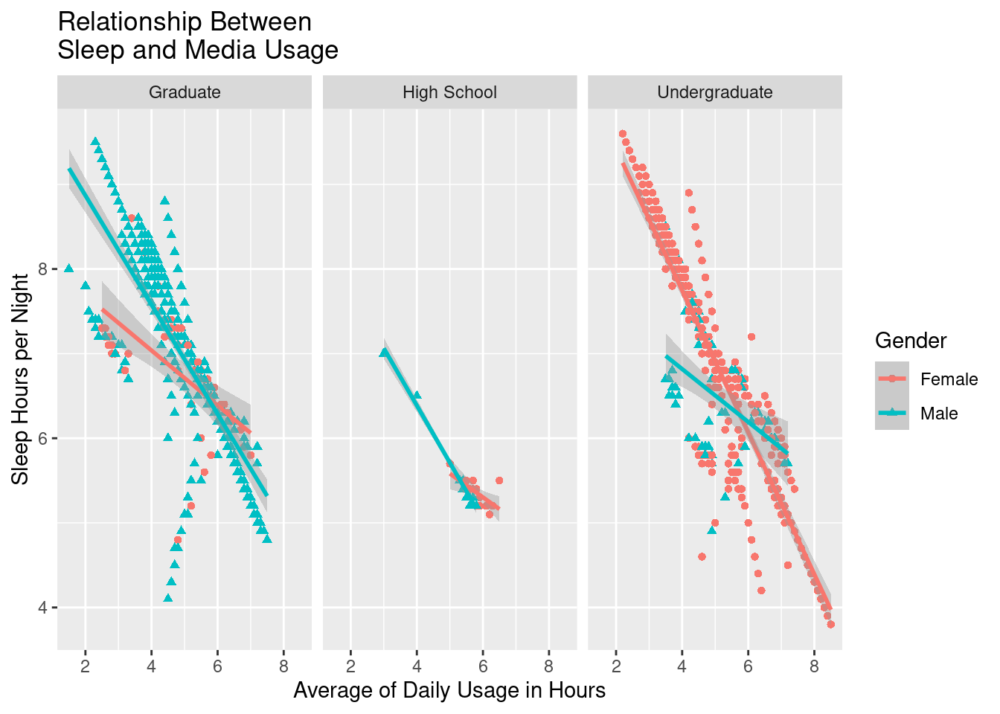
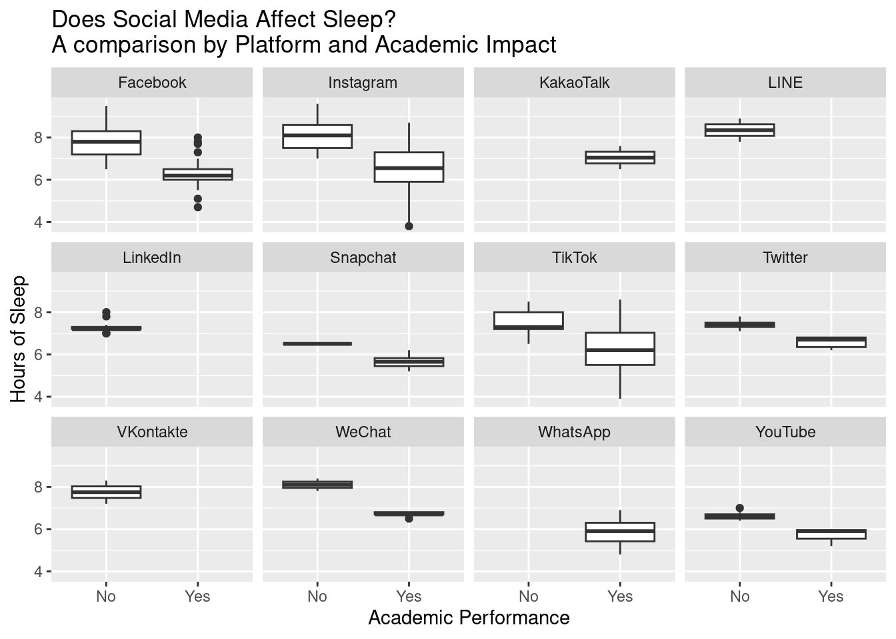
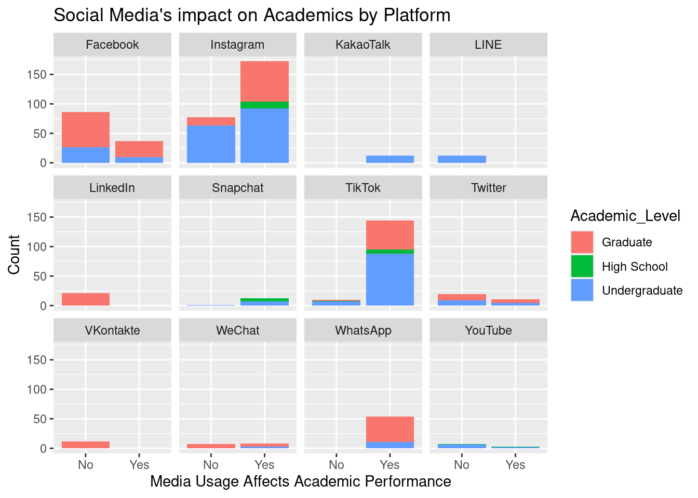
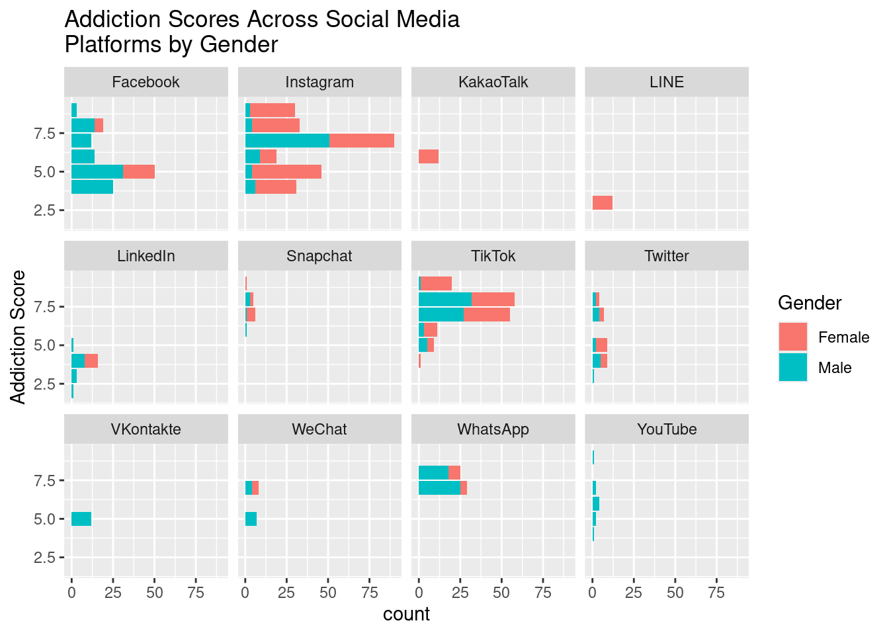

Study on Social media Usage and its impact on Students
goals
general
Author
Ana Zuniga
Published
August 6, 2025
Introduction
Does Social Media Usage affect students? This question is important to me as an Undergraduate student in Graphic Design and Social Media. Not only am I a student that consumes social media content, but I also create content that students can consume.
Predictions
My predictions are that students with the highest screen time will be affected by the usage.
The source I will use to answer my questions is the Kaggle Database article “Student’s Social Media Usage Addiction.”
Approach
This CSV file contains survey responses from students aged 16–25 across multiple countries, capturing their social media usage patterns alongside key personal, academic, and well-being indicators.
It is structured for easy import into statistical software or data-science environments and includes both quantitative and categorical fields to enable exploratory analysis, predictive modeling, and reporting on the relationships between social media addiction and various life outcomes.
The variables that are inlcuded are student ID, age, Gender, Academic level, country, Average daily usage, most used platforms, affects academic performance, sleep hours per day, and mental health scores.
There are 705 rows, students from ages 16-25 with a multi-country coverage.
Tools
R and RStudio in Posit.Cloud and GitHub for website hosting.
Approach
I will examine the relationship between Social media usage and sleep per night with different academic levels in females and male students?
I will examine if academic performance is affected by sleep hours per night with the usage of specific media platforms?
I will examine if gender impacts the addiction score results?
Predictions
I predict that the academic performance will be affected with the usage of social media platform.
I predict that some students will sleep less because of the usage of social media depending on their academic load.
I don’t think that there will be a relationship between gender and addiction to social media.
Result
Code
library(tidyverse)
── Attaching core tidyverse packages ──────────────────────── tidyverse 2.0.0 ──
✔ dplyr 1.1.4 ✔ readr 2.1.5
✔ forcats 1.0.0 ✔ stringr 1.5.1
✔ ggplot2 3.5.2 ✔ tibble 3.3.0
✔ lubridate 1.9.4 ✔ tidyr 1.3.1
✔ purrr 1.1.0
── Conflicts ────────────────────────────────────────── tidyverse_conflicts() ──
✖ dplyr::filter() masks stats::filter()
✖ dplyr::lag() masks stats::lag()
ℹ Use the conflicted package (<http://conflicted.r-lib.org/>) to force all conflicts to become errors
socialmedia <-read.csv ("../../Socialmedia_data.csv")#what is the relationship between Social media usage #and sleep per night with different academic leves #in females and male students?#negative slop regardless of academic level. Less sleep = higher average time of usage regardless of genderggplot(socialmedia, aes(x = Avg_Daily_Usage_Hours, y = Sleep_Hours_Per_Night,color = Gender, shape = Gender)) +geom_point() +geom_smooth(method ="lm") +facet_wrap(~Academic_Level) +labs(x ="Average of Daily Usage in Hours",y ="Sleep Hours per Night",title ="Relationship Between Sleep and Media Usage" )
`geom_smooth()` using formula = 'y ~ x'

# How Academic performance affected by sleep hours per night with the usage of#specific media platforms?#box plot (worked) there is a relationship between hours #of sleep and perceived academic performance!ggplot(socialmedia, aes ( x =as.factor( Affects_Academic_Performance), y = Sleep_Hours_Per_Night )) +geom_boxplot() +facet_wrap(~Most_Used_Platform) +labs(x ="Academic Performance",y ="Hours of Sleep",title ="Does Social Media Affect Sleep? A comparison by Platform and Academic Impact ")

#all students that were "not affected" slept at least 6 hrs per night #regardless of the media platform they were using.#Bar- Social media's impact on academics by platform..ggplot(socialmedia, aes ( x =( Affects_Academic_Performance), fill = Academic_Level )) +geom_bar() +facet_wrap(~Most_Used_Platform) +labs(x ="Media Usage Affects Academic Performance",y ="Count",title ="Social Media's impact on Academics by Platform")

#Addiction score by Genderggplot(socialmedia, aes(y = Addicted_Score, fill = Gender)) +geom_bar() +facet_wrap(~Most_Used_Platform) +labs(x ="count",y ="Addiction Score",title ="Addiction Scores Across Social MediaPlatforms by Gender")

Graphs
The graph shows a negative slop regardless of academic level. The results also showed that less sleep equals to higher average time of usage regardless of gender. The graph is unusual because it is steep, almost linear, negative slop across all academic levels. Data usually looks a little more varied, but this was not the case for this line graph.
The box plot shows that there is a relationship between hours of sleep and perceived academic performance. Most students’ academic performance that were not affected by their hours of sleep had at least 7 hours of sleep daily. Those who had less than 7 hours of sleep answered “yes” that their academic performance was affected across all media platforms.
A bar graph showed the effect that media usage has on academic performance depending on the academic levels of all the students that are collected in the data.
The bar graph was also useful to evaluate the relationship between gender and addiction scores based on the data. The results showed that gender doesn’t relate to the addiction score, but some platforms are more male or female used.
Discussion
My hypothesis was supported that social media usage affects student’s academic performance. The initial graph was very unusual because the slope was almost linear across the different types of graphs, but the results were consistent with the data.
I have updated my belief that academic performance is affected as a consequence of other factors such as sleep, platform used, and addiction level to the media. After viewing these graphs I believe in my hypothesis more.